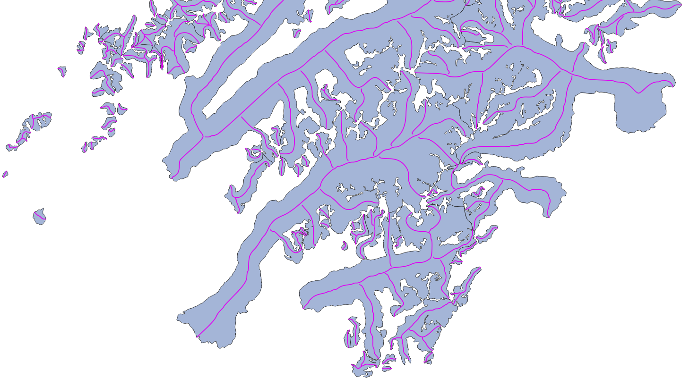

Glacier centerlines product#
New in RGI 7.0
The glacier centerlines product contains geometrical centerlines for the main branches and major tributaries of all glaciers in the RGI 7.0 glacier product. The centerlines are computed using a geometrical flow routing algorithm first described by Kienholz et al. [2014] and implemented and executed by the Open Global Glacier Model (OGGM) [Maussion et al., 2019]. When using this product, we recommend to cite both publications alongside the standard RGI 7.0 citation to provide a scientific context.
Each glacier contains one centerline along the main trunk of the glacier, as well any number of additional centerlines along tributaries, sorted according to their Strahler number (a measure of branching complexity defined by Strahler [1952], see definition below). The main (i.e.longest) centerline is used to compute the glacier product’s maximum length attribute lmax_m.

Fig. 6 Example of the glacier centerlines product (purple) drawn over the glacier product (light blue).#
Product files#
In the following, file contents are explained using RGI region 01 (Alaska) as example:
RGI2000-v7.0-L-01_alaska.shpRGI glacier centerlines as a shapefile (with accompanying
.dbf,.prj,.cpgand.shxfiles).RGI2000-v7.0-L-01_alaska-attributes.csvGlacier centerlines attributes in a
.csvfile. The attributes are strictly the same as those encountered in the shapefile. This file allows users to read glacier attributes without reading the entire shapefile.RGI2000-v7.0-L-01_alaska-attributes_metadata.jsonDescription of the attributes in the ceterlines product shapefile: full name, description, units, etc. The content of this file is displayed in Full list of attributes below.
Full list of attributes#
The following attributes are available in the RGI 7.0 shapefiles. For more details on some of them, see Additional information on centerline attributes.
rgi_idlong_name: RGI identifier
description: Unique identifier assigned to a single intersect line.
datatype: str
units:
source: RGIrgi_g_idlong_name: RGI glacier identifier
description: Glacier ID to which the centerline belongs.
datatype: str
units:
source: RGIsegment_idlong_name: Segment identifier
description: Integer number uniquely identifying this centerline within the glacier. The main centerline is always last.
datatype: int
units:
source: RGIis_mainlong_name: Is main centerline
description: Integer number indicating whether the centerline in the main centerline (1) or not (0). There is only one main centerline per glacier.
datatype: int
units:
source: RGIoutflow_idlong_name: Outflow segment identifier
description: Each secondary centerline flows into another centerline. This identifier points to thesegment_idto which this centerline flows to.
datatype: int
units:
source: RGIstrahler_nlong_name: Strahler number of this centerline.
description: Strahler number (hydrological order) of the centerline, from lowest (1, line without tributaries but with possible descendants) to highest (the main centerline).
datatype: int
units:
source: RGIlength_mlong_name: Centerline length
description: Length of the centerline in meters.
datatype: int
units: m
source: RGIgeometrylong_name: Geometry
description: Centerline geometry (LineString).
datatype:
units: deg
source: RGI
Additional information on centerline attributes#
The centerlines and their attributes are computed by OGGM [Maussion et al., 2019], which implements an algorithm described by Kienholz et al. [2014]. The implementation in OGGM follows closely the description by Kienholz et al. [2014], but it is coded in a different framework and thus may lead to slightly different results (the OGGM implementation is coded entirely in python, while the original implementation relied on ArcGIS tools). Neither the original algorithm nor its implementation in OGGM are perfect, and it is likely that centerlines on individual glaciers would be drawn differently by a human or other algorithms. We note that we do not use any velocity product but rely purely on geometric and topographic considerations.
Strahler number#
The Strahler number strahler_n is a measure of branching complexity defined by [Strahler, 1952] commonly used in hydrological applications. A Strahler number of 1 indicates a centerline without any tributaries. A Strahler number of 2 indicates a centerline with one or more upstream tributaries of the same order, i.e. each of them having a Strahler number of 1. If a centerline with a Strahler number of 2 meets a downglacier centerline, the latter is assigned a Strahler number of 3. This ordering is important for mass flow routing. Each centerline contains a reference to its descendant, and this reference might be used by models to transfer mass from the tributaries towards the main centerline.
Main centerline#
The main centerline of the glacier is the longest of all centerlines connecting the multiple glacier “heads” to one single terminus. The centerline algorithm selects potential heads by searching for local elevation maxima along the glacier outline, and then computes all the centerlines joining all heads to the terminus. The longest is selected as the main centerline, which implies that the computed glacier length is usually longer than the shortest route from the highest to the lowest point of the glacier.